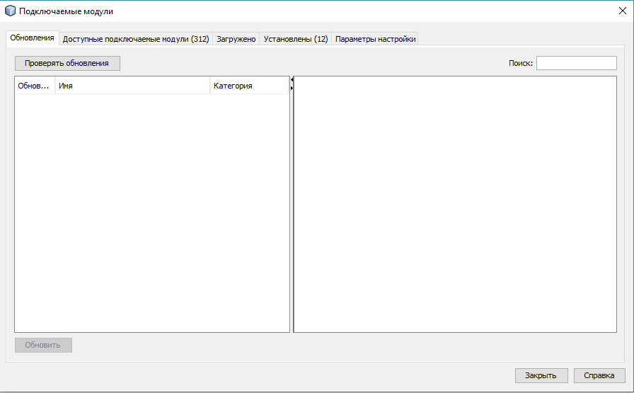
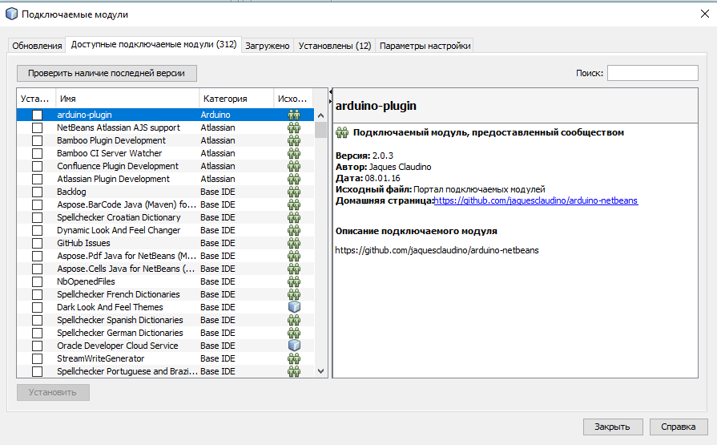
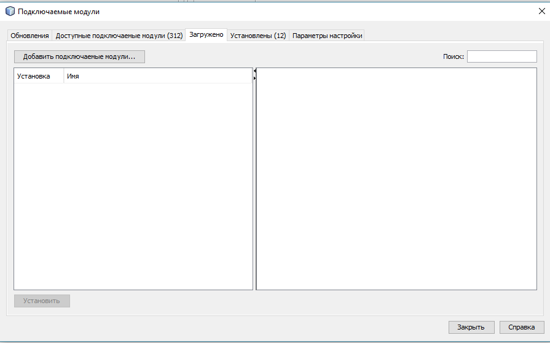
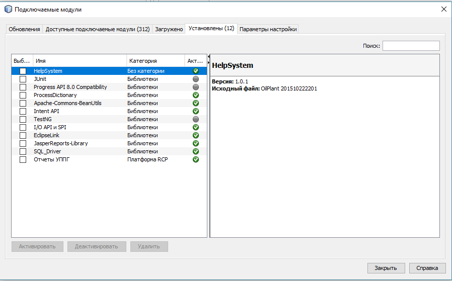
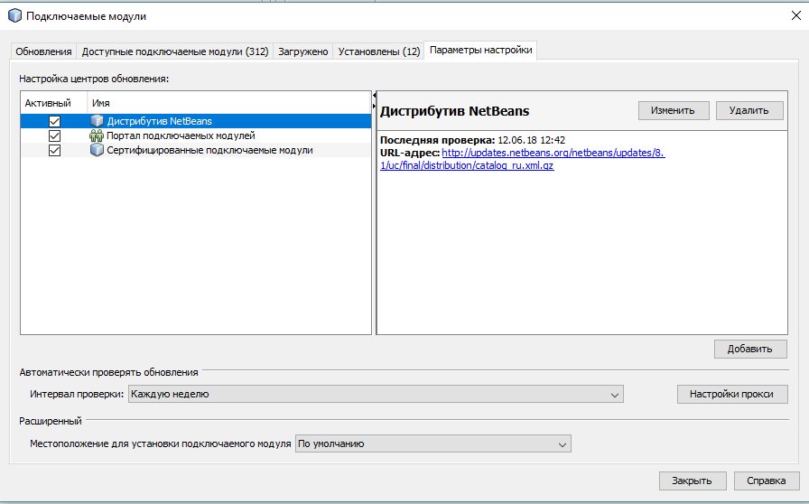

Описание диалога "Подключаемые модули"
Диалоговое окно "Подключаемые модули"
предназначено для работы различными дополнениями и обновлениями приложения.
Данное диалоговое окно содержит следующие вкладки:
Обновления

Предназначена для поиска и установки обновлений установленных модулей.
Доступные подключаемые модули

Предназначена для установки дополнительных модулей, разработанных сообществом Netbeans.
Загружено

Предназначена для загрузки и установки подключаемых модулей, разработанных специально для данного приложения.
Установлены

Предназначена для просмотра, отключения или удаления установенных модулей.
Параметры настройки

Предназначена для настройки центров обновления подключаемых модулей.
Данное диалоговое окно выполняет очень важную роль в работоспособности приложения.
Справка о данном диалоговом окне приведена исключительно в ознакомительных целях.
Выполнять операции с данным диалоговым окном не системному администратору категорически запрещается!!!
В противном случае может быть нарушена работоспособность приложения!!!